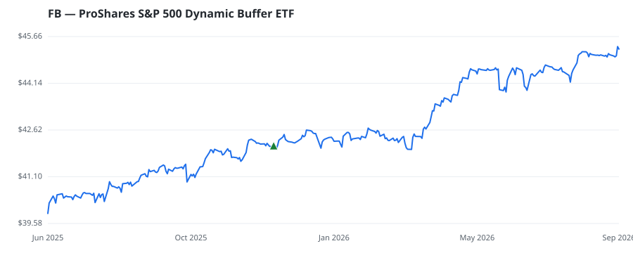

bullish · bearish · n/a — dots: price>SMA10 · SMA10>SMA50 · SMA50>SMA200 · up>down volume (20d)
Other · unknown cap
Members who bought FB earned a dollar-weighted +7.5% from their disclosure dates, versus +13.1% for the S&P 500 over the same holding windows (-5.6% alpha).

▲ green = a disclosed purchase · ▼ red = a disclosed sale (plotted on disclosure date)
| Revenue | $117.9B | Net income | $39.4B |
|---|---|---|---|
| Operating income | $46.8B | Diluted EPS | $13.77 |
| Assets | $166.0B | Equity | $124.9B |
| Member | Chamber | Out-performer | Disclosed buys $ | Return on buys |
|---|---|---|---|---|
| Gilbert Cisneros | house | — | $8K | +7.5% |
Disclosed $ figures are bracket midpoints — filings report ranges (e.g. $1,001–$15,000), not exact amounts.